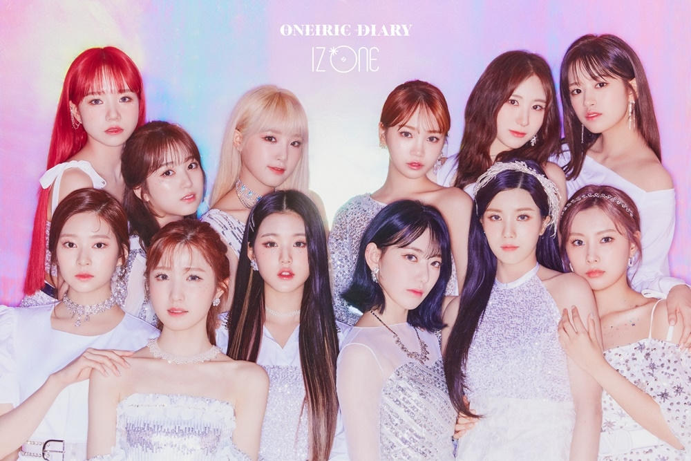

<아이즈원(영어: IZ*ONE)>은 대한민국의 12인조 한일 합작 걸 그룹으로, <9명의 한국인 멤버와 3명의 일본인 멤버로 구성되어 있다. 2018년 Mnet에서 방영한 《PRODUCE 48》에서 최종 선발된 12명 장원영, 미야와키 사쿠라, 조유리, 최예나, 안유진, 야부키 나코, 권은비, 강혜원, 혼다 히토미, 김채원, 김민주, 이채연으로 이루어져 있다.
그룹명 IZ*ONE은 12와 눈을 뜻하는 IZ, 하나를 뜻하는 ONE이라는 뜻으로 12명의 소녀가 하나가 되는 순간 모두가 주목한다는 의미를 담고 있다. 팬덤은 WIZ*ONE 이다.